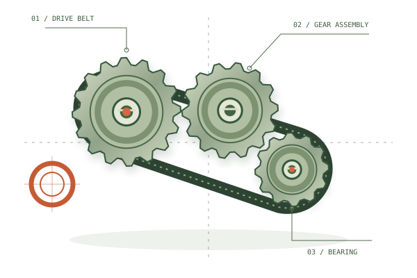

Find a clear spot.
Record from a safe position. Reduce background noise and keep clear of moving parts.
THE MECHANICAL NOISE DETECTIVE
That rattle. That squeak. That new, unsettling hum.
Get a clearer picture of what your machine is trying to tell you.

YOUR WORKBENCH
BETTER RECORDINGS. BETTER CLUES.
Record from a safe position. Reduce background noise and keep clear of moving parts.
A steady 10–30 second clip often gives more context than one brief squeak.
Cold start or warm? Spin or drain? Under load or idle? The timing matters.
Smoke, a burning smell, sparks, or a serious change in braking or steering?
Stop using the machine, move to safety, and seek qualified help. Don’t run it again just to record a noise.